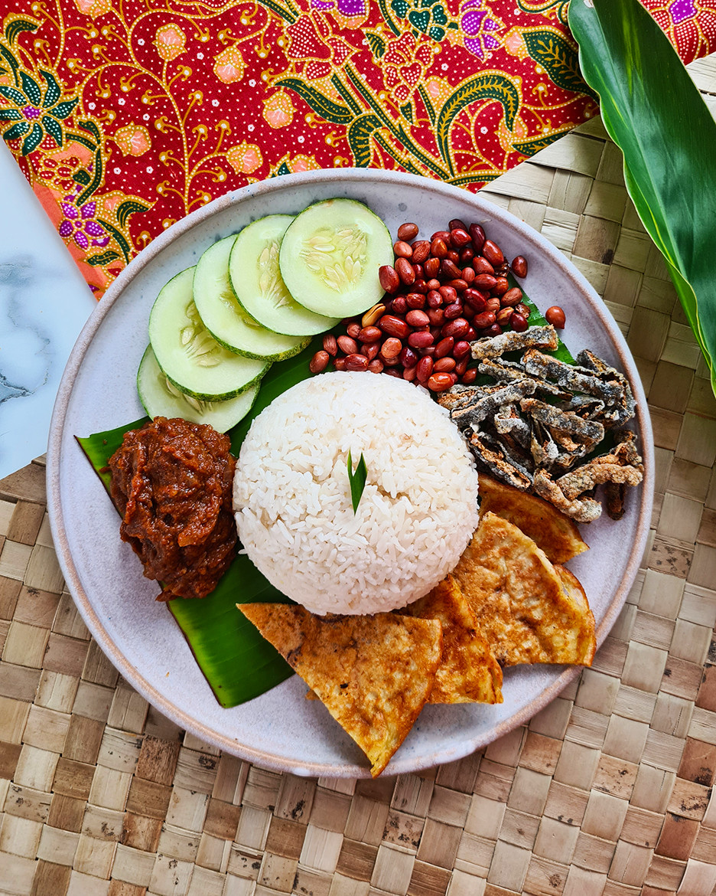

Nasi Lemak

Description
Nasi lemak is a rice dish commonly served with roasted nuts, egg, ikan bilis (anchovies), and slices of cucumber.
Literally meaning “fatty rice” in Malay, nasi lemak's distinctive taste comes from cooking the rice in coconut milk
and pandan leaves which gives the dish its rich flavour and fragrant aroma.
Ingredients
- coconut milk
- water
- rice
- ginger
- bay leaf (pandan leaf)
- salt
- oil
- peanuts (raw)
- anchovies
- cucumbers
- onion
- shallots
- chilli paste
- sugar
- tofu
Steps
- Make the rice by mixing coconut milk, water, rice, ginger, ground ginger, bay leaf (or pandan leaf), salt and let it cook in rice coocker
- Heat the pan with oil and stir the peanuts in it and let them rest on paper towel to remove excess grease
- Add more oil to the pan and deep fry the tofu (tofu can be marinated before to make it crunchy)
- Stir the anchovies to cook them until crisp add some salt and a chille paste
- To make the sauce heat oil in a clean skillet stir onions, shallots, and garlic to cook for a little bit before you add chilli paste, very little sugar and salt.